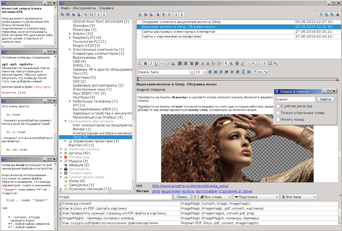
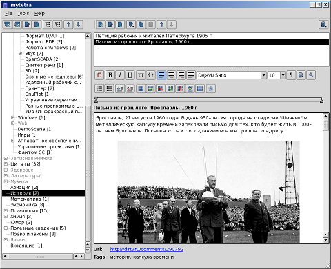
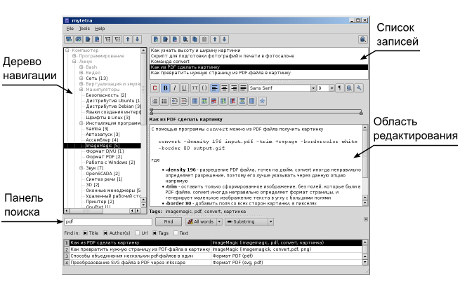

|
Официальная страница / Official page
(Rus / Eng)
Программа
MyTetra — это полнофункциональный кроссплатформенный менеджер заметок (PIM-manager), использующийся для сбора и накопления различного рода информации. Все записи (заметки, статьи) организуются в древовидную структуру, а так же снабжаются ключевыми словами-тегами, позволяющими быстро находить нужные записи. Ссылки между записями, прикрепляемые файлы, шифрование, развернутый поиск, синхронизация, копирование из браузера, кроссплатформенность, один из лучших визуальных WYSIWYG редакторов текста - все это есть в PIM-менеджере MyTetra.
Программа написана на языке C++ по принципу Qt-only, и не требует для своей работы никаких других сторонних библиотек.
Поддерживаемые системы: Linux, Windows, Mac Os X, FreeBSD, MeeGo
Лицензия: GPL v.3
Последняя актуальная версия: 1.44.31 (14.09.2018)
Онлайн-клиенты
Существует два web-клиента, предоставляющие доступ к данным MyTetra. Для их использования необходимо, чтобы база знаний хранилась на публичных сервисах, таких как GitHub.com, BitBucket.org, etc.
Клиенты:
- MyTetra Share - сервис для размещения (публикации) базы записей MyTetra в сети Интернет. Работает с 22.04.2013.
- MyTetra Web Client - клиент для онлайн доступа к данным. Имеет веб-интерфейс, похожий на Qt-интерфейс MyTetra. Работает с 30.09.2012.
Скриншоты
v.1.42 Полный размер

v.1.26 Полный размер

Скачать
v.1.44.31 (14.09.2018)
MyTetra v.1.44.31 для Linux 64 bit (25 Мб) - сборка со всеми библиотеками
MyTetra v.1.44.31 для Windows (16 Мб) - сборка со всеми библиотеками
Архив исходников MyTetra v.1.44.31 (14 Мб)
Ссылки на сборки от энтузиастов - неофициальные нестабильные сборки более новых версий
Материальная поддержка
Сбербанк: 5469 5200 1474 9600
PayPal: https://www.paypal.me/SMStepanov
WMZ: Z586949314665
WMP: P914723712675
Яндекс.Деньги (Ю.Money): 410011385378014
BTC: 13U5ZWfifBs1XDzJYRmwCjUqFqz3LEwPar
ETH: 0x5FB23243c77FAb8f13C46941c112cF5E9E8483A8
Разработка и исходники
Исходники MyTetra доступны на GitHub. Страница проекта:
https://github.com/xintrea/mytetra_dev
Для получения последних актуальных исходников создайте директорию и выполните в ней команду:
git clone https://github.com/xintrea/mytetra_dev.git
После скачивания исходников, не забудьте переключиться на нужную ветку:
git checkout master
или
git checkout experimental
У нас используется две ветки: master и experimental.
master - стабильная ветка с последними стабильными исходниками:
https://github.com/xintrea/mytetra_dev/tree/master
experimental - ветка для разработки:
https://github.com/xintrea/mytetra_dev/tree/experimental
Документация
Краткое руководство пользователя MyTetra (рус.) (pdf, 125 Кб)
Настройка синхронизации MyTetra через интернет
Формат хранения данных MyTetra
Обзор MyTetra версии 1.28
Обзор MyTetra версии 1.30
Обзор MyTetra версии 1.42
Видео
Обзор MyTetra v.1.42. Часть 1. Обзор основных возможностей MyTetra
Обзор MyTetra v.1.42. Часть 2. Настройки программы MyTetra
Обзор MyTetra v.1.42. Часть 3. Нововведения в MyTetra v.1.42
Пример интеграции MyTetra и браузера с помощью стороннего скрипт-решения (Гриня Григорий)
Обсудить
Ветка обсуждения на форуме сайта WebHamster.ru: https://webhamster.ru/punbb/viewforum.php?id=3
Для кого предназначена программа MyTetra
В первую очередь программа предназначена для людей, которые видят неимоверную величину современных потоков информации, и понимают сложность хранения всех сведений в собственной памяти.
Тот, у кого возникало желание разгрузить память от редко используемой информации, может сделать программу MyTetra своим постоянным спутником.
Бывает так, что поиск нужной информации через интернет-поисковики сложен, и нужные вещи вы находите через пару часов интенсивного поиска. Если вы чувствуете, что второй раз найти эту информацию в интернете будет так же сложно, запишите ее в MyTetra.
Если вы нашли информацию, которая может пригодиться в ближайшее время, и вы видите, что информация подана хорошо и полно, запишите её в MyTetra.
Если вы хотите избавиться от бумажечек, в которых написаны правила составления каких-нибудь команд, или синтаксис, который вы постоянно забываете - запишите их в MyTetra, и эти сведения всегда будут под рукой.
В MyTetra удобно делать собственные рабочие записи, писать документацию или заготовки своих статей.
Главные особенности программы
- Всегда запоминается геометрия окна
- При запуске открывается последняя запись, с которой ранее шла работа
- Окно прячется в системный лоток
- Клик на кнопку закрытия не закрывает программу, а сворачивает окно. Для выхода надо явно выбрать пункт меню «Выход» или нажать Ctrl+Q
- Ветки дерева навигации можно свободно сортировать (перемещать вверх-вниз) в пределах ведущей ветки
- Для веток доступны операции удаления, копирования, вставки
- Записи, прикрепленные к ветке, можно свободно сортировать (перемещать вверх-вниз) в пределах списка
- Для выбранных записей доступны операции удаления, копирования, вставки
- Записям можно задавать текстовые метки (теги) для быстрого поиска
- Выбранная запись всегда доступна для редактирования без дополнительных действий (планируется добавить режим защиты от изменений для важных записей)
- Программа сама сохраняет текст заметки при переключении на другую запись или ветку, при выходе из программы
- Программа имеет настраиваемую директорию-корзину, куда автоматически складывает предыдущие версии всех записей
- Для добавления записей используется WYSIWYG редактор
- В редакторе предусмотрен режим отображения символов разметки текста
Подробности реализации
Дерево навигации хранится в одном XML-файле с несложным форматом, кодировка UTF-8.
Записи хранятся в файлах HTML-формата в кодировке UTF-8. Для редактирования используется специально разработанный для MyTetra интегрируемый визуальный редактор WyEdit. Данный редактор в дальнейшем планируется выделить в отдельный проект. Каждая запись хранится в отдельной директории, в которой располагается основной HTML-файл и файлы картинок.
Программа распространяется с исходными кодами под свободной лицензией GPL v.3 и имеет открытый формат хранения данных. При разработке используются только фреймверк Qt и стандартные C++ библиотеки.
Торжественное обещание разработчиков
Разработчики торжественно клянутся, что каждая новая версия программы MyTetra будет совместима с предыдущим форматом хранения данных, либо будет иметь средства для перекодирования в новый формат без потерь информации.
История изменений
0.x - 1.x
Первые версии с интерфейсом Qt3, переход на версию Qt4: 2003 - 2011 г.
Использование форм QtDesigner в Qt3 не позволяло сделать полностью управляемый код, поэтому после перехода на Qt4, "нарисованные" формы в виде файлов *.ui в проекте отсутствуют.
1.25 - 1.30.1
Первые публичные версии 2011 - 2016 г.
- Исправлено подключение заголовочных файлов Qt-фреймверка
- Сделано более точное восстановление геометрии окна
- Добавлена возможность запуска в системах, в которых отсутствует системный трей
- Ввозможность запуска MyTetra в операционной системе MeeGo
- В globalParameters теперь хранятся ссылки на основные объекты главного окна. Это сделано для того, чтобы не использовать поиск объектов по имени, так как при начальной инициализации MainWindow до выхода из конструктора MainWindow невозможно найти подчиненные объекты MainWindow
- Метки сделаны кликабельными, при клике на метку происходит поиск
- При выделении картинки и клике на конопку управления картинками появляется окно настройки размеров картинки
- Теперь при клике на кнопку просмотра HTML-исходника есть возможность его отредактировать
- Появилась возможность выделять часть текста для форматирования в код. Ранее для того, чтобы отформатировать в код нужно было выделять полностью параграф. Теперь можно выделить, например, одно слово, и при нажатии на клавишу "{}" начертанию слова будет применено начертание кода
- Появилась настройка цвета кода
- Ресурсы (картинки, перевод) из внешних файлов перенесены вовнутрь бинарника и доступ к ним идет через механизм Qt-ресурсов
- Сделана более правильная очистка форматирования при нажатии клавиши сброса форматирования к стандартному
- Сделан вызов редактирования свойств картинки по правому клику мыши
- Исправлен механизм запоминания размеров области поиска по базе
- Добавлена возможность старта программы из любой директории, то есть, теперь не обязательно давать команду cd <директория> в стартовом скрипте
- Сделано создание начальных файлов окружения в текущей директории бинарника и в директории пользователя
- Сделаны диалоги, которые вызываются при первоначальном старте программы, и которые выясняют, где нужно создать начальные файлы программы
- Добавлена кнопка редактирования цвета текста. Скрыта, так как плохо укладывается в концепцию программы
- Добавлена кнопка распахивания редактора. Скрыта, так как плохо укладывается в концепцию программы
- В *.pro файл добавлена секция инсталляции, при команде make install бинарник mytetra копируется в /usr/local/bin
- Исправление замеченных багов, небольшая реорганизация кода
- Добавлено шифрование, синхронизация, навигация по истории. Шифрование отлажено на 32-х битных и на 64-х битных платформах.
1.42.2 от 22.11.2016
Все изменения описаны в трех видеороликах: https://www.youtube.com/watch?v=Bmp_dk2LA6I
1.43.27 от 06.07.2018
- Исправлена проблема неполного удаления директории записи при удалении самой записи, возникающая при определенных условиях;
- Исправлена проблема, из-за которой превращалась в кашу только что созданная, ни разу не записанная внутренними механизмами MyTetra запись, при переключении её ветки в режим шифрования;
- Исправлен баг, из-за которого дважды нажималась кнопка PgUp при одиночном нажатии PgUp в редакторе;
- Сделан поиск по названию ветки;
- Устранены потенциальные memory leak в библиотеке шифрования;
- Исправлена ошибка, возникающая при переименовании прикрепленного файла путем правки его расширения. При некоторых условиях измененный таким способом файл становился недоступным из программы MyTetra;
- Сделана корректная работа с прикрепляемыми dot-файлами, файлами с точками на конце и файлами без расширения;
- В диалоге добавления записи кнопка OK сделана активной по умолчанию для любых графических окружений рабочего стола;
- Исправлен баг, при котором в момент форматирования "в код" или в момент форматирования "в чистый текст", в случае длинного текста (когда видна полоса прокрутки), весь текст прокручивался наверх;
- Исправлена работа со строкой тегов, в которой каким-либо образом были добавлены символы перевода строки;
- Исправлена проблема некорректного восстановления положения окна в некоторых оконных средах, например в LXDE+Openbox;
- Исправлен баг, при котором добавляемый в аттачи PNG-файл удалялся в том случае, если перед добавлением, в тексте редактора, была вставлена картинка;
- Исправлен баг, при котором в момент копирования записи в буфер обмена, если текст записи был изменен, но изменения небыли записаны, то в буфер попадала запись без изменений;
- Исправлен баг, при котором в редакторе невозможно было писать обычный текст после ссылки в случае, если ссылка стояла в самом конце текста;
- Исправлен баг, при котором в тексте, идущем сразу после ссылки, и который не был ссылкой, сохранялась информация о том, что присутствует строка с текстом ссылки (особенность QTextEdit);
- Сделано автоматическое выделение всей ссылки в момент нажатия на кнопку редактирования ссылки в том случае, если пользователь просто поставил курсор на текст ссылки и сам не сделал выделения;
- Исправлена очистка форматиования при нажатии кнопки "Только текст" в случае, если очищается URL в самом начале или в самом конце текста;
- Изменен принцип отобажения семейства шрифтра в редакторе. Если шрифт не определен, то отображается дефолтный шрифт, который хранится в настройках редактора. Так же короткие имена шрифтов заменяются на полные;
- Исправлено поведение выпадающих списков начертания шрифта и размера шрифта. Теперь они более правильно отображают свои значения в случае сложного форматирования при вставке текста из браузера;
- Файл лога действий стал автоматически ротироваться с целью сохранения допустимого размера;
- Решена проблема закачивания картинок и файлов с HTTPS-ресурсов, связанная с различием версий библиотеки openssl;
- Добавлены иконки национальных флагов в окне общих настроек, чтобы выбор языка был более заметен;
- В контекстное меню редактора добавлен пункт "Вставить только текст";
- Исправлено появление тонкого начертания символов после снятия bold-форматирования (актуально для HiDPI мониторов);
- Исправлен стартовый скрипт mytetra.run для Linux, так чтобы он корректно срабатывал в случае, если для данного файла создается линк;
- Прочие правки.
План развития
Здесь записываются желаемые возможности программы, которые необходимо реализовывать в новых версиях.
- При поиске по базе, в случае если поисковая фраза найдена внутри текста записи, сделать прокрутку до данного места и выделение найденного текста;
- Попробовать реализовать следующий функционал: "Неплохо бы сделать, чтобы поведение форматирования (полужирный, курсив и т.п.) было схоже с поведением в текстовых процессорах в том плане, чтобы можно было, к примеру, нажать ctrl + B и начать писать текст уже полужирным шрифтом, а не сперва писать текст, а лишь потом назначать форматирование";
- Опционально: cделать просмотр истории измененных записей в каталоге Trash, сделать функционал по восстановлению данных записей;
- Сделать кнопку/команду "Закрыть зашифрованные ветки" чтобы ветки закрылись и далее снова потребовался ввод пароля для доступа к данным;
- Сделать настройку "Закрыть зашифрованные ветки спустя N минут бездействия";
- Опционально: сделать облако меток;
- Некоторые пользователи сообщают, что при инсталляции MyTetra в директории пользователя создается директория с именем ?????. Разобраться почему, исправить. Подробне тут https://webhamster.ru/punbb/viewtopic.php?pid=389#p389; Видимо, проблема возникает при русскоязычном имени пользователя (соответственно, в имени каталога пользователя имеются русскоязычные символы);
- Добавить настройку горячих клавиш;
- Добавить возможность вводить и редактировать формулы (актуально для школьников и студентов).
Старые версии
v.1.43 (06.07.2018)
MyTetra v.1.43 для Linux 64 bit (25 Мб) - сборка со всеми библиотеками
MyTetra v.1.43 для Windows (15 Мб) - сборка со всеми библиотеками
Архив исходников MyTetra v.1.43.27 (14 Мб)
v.1.42 (22.11.2016)
MyTetra v.1.42 для Linux 32 bit (22 Мб) - сборка со всеми библиотеками
MyTetra v.1.42 для Linux 64 bit (23 Мб) - сборка со всеми библиотеками
MyTetra v.1.42 для Windows (20 Мб) - сборка со всеми библиотеками
Сборка для Mac Os X - требуется оборудование Apple
Архив исходников MyTetra v.1.42.2 (15 Мб)
Репозитарии MyTetra Fedora 23, 24, 25 (Grechishkin Pavel)
Сборка для ArchLinux (Cyberxndr)
v.1.30 (2011 - 2016)
MyTetra v.1.30 для Linux i386-i686 (7,5 Мб) - сборка со всеми библиотеками
MyTetra v.1.30 для Windows (7,9 Мб)
MyTetra v.1.30 для FreeBSD 8.2 (1,5 Мб) - для работы установить Qt 4.7.3 через систему портов
MyTetra v.1.30.1 для Mac Os X 10.6.8 x86-64 (10,7 Мб)
MyTetra v.1.30.1 для MeeGo (5,3 Mb)
MyTetra v 1.30.1 SlackBuild для Linux SlackWare 13.37
Исходники MyTetra v.1.30.1 - смотрите раздел Разработка, чтобы получить актуальные исходники
|
{kind=link}
{kind=link}